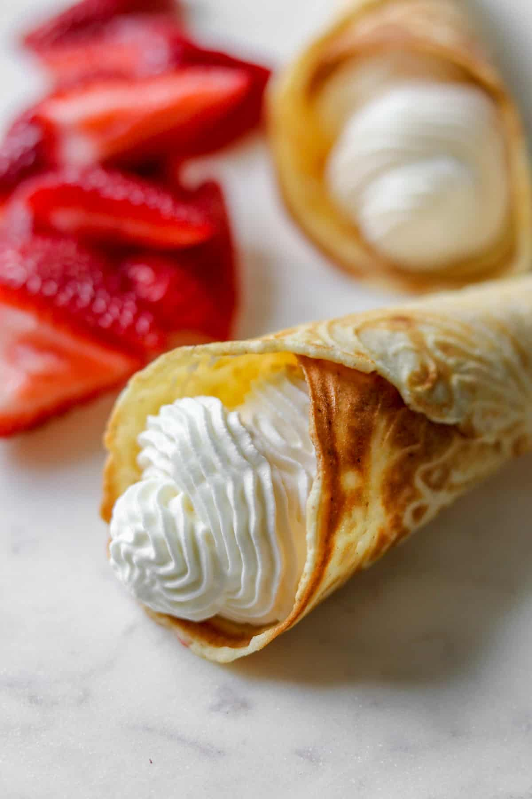
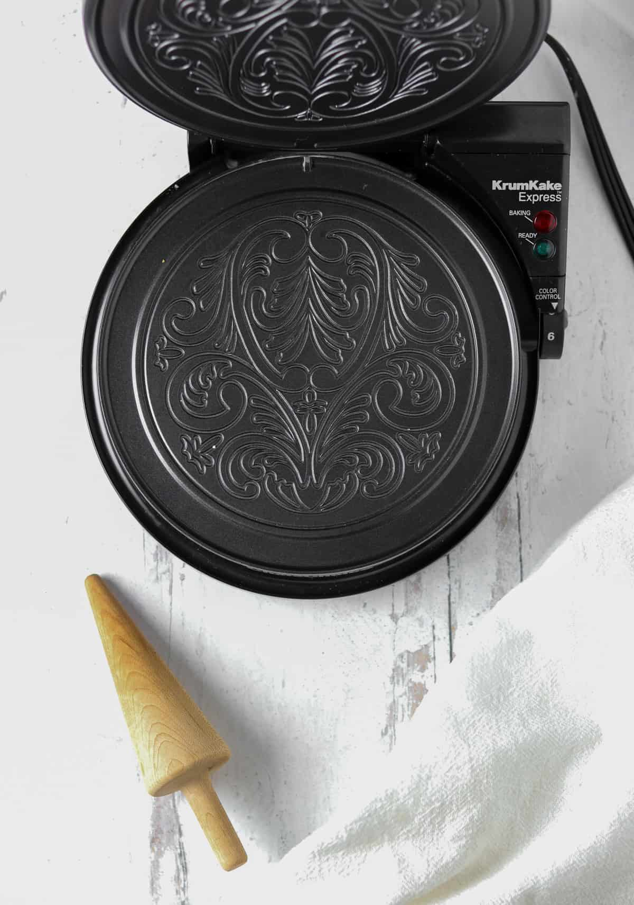

Krumkake Recipe
Krumkake Recipe
Krumkake (kroom-kahk-uh) is a Norwegian cookie that resembles a waffle and is usually cone-shaped, thin,
slightly sweet, and crispy. You can eat them plain or put toppings inside of it, such as whipped cream,
strawberries, or even ice cream! Krumkake is made using an iron that looks like a special waffle iron, whether
electric or on the stove, and they tend to have an intricate pattern on them. As a traditional Norwegian cookie,
irons are often passed down generation to generation, and these cookies can be traced back thousands of years!
They are delicious and often a Christmas-time staple.

Equipment Needed
- Krumkake iron
- Cone to wrap cookies around

Ingredients
- 1 cup butter, melted
- 1 cup sugar
- 1 cup potato starch
- 1 cup all purpose flour
- 1/2 cup water
- 2 tsp ground cardamom
Instructions
- Heat krumkake iron on the stove over medium heat (or plug in electric and allow to pre-heat).
- Mix all ingredients together in a bowl.
- Pour a spoonful of batter onto pre-heated iron and press together for approximately 30 seconds, until
browned.
- Trial and error is expected until you determine the precise timing.
- Remove the finished cookie with a knife or something similar and immediately roll it around a cone until
it cools a bit.
- Slide cookie off cone once formed and set aside to cool further.
- Cookies can be stored in a tin for several days.